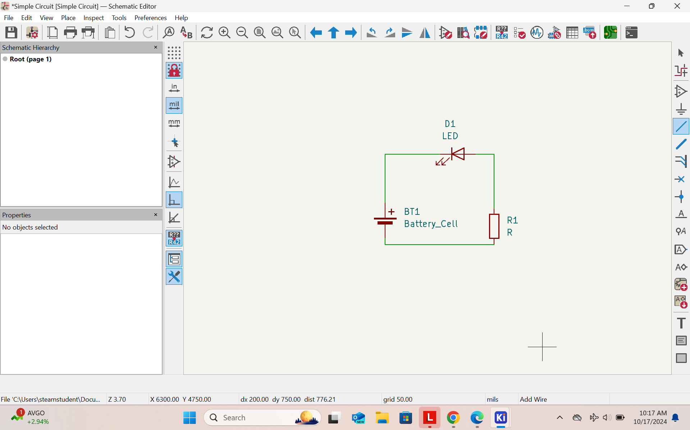
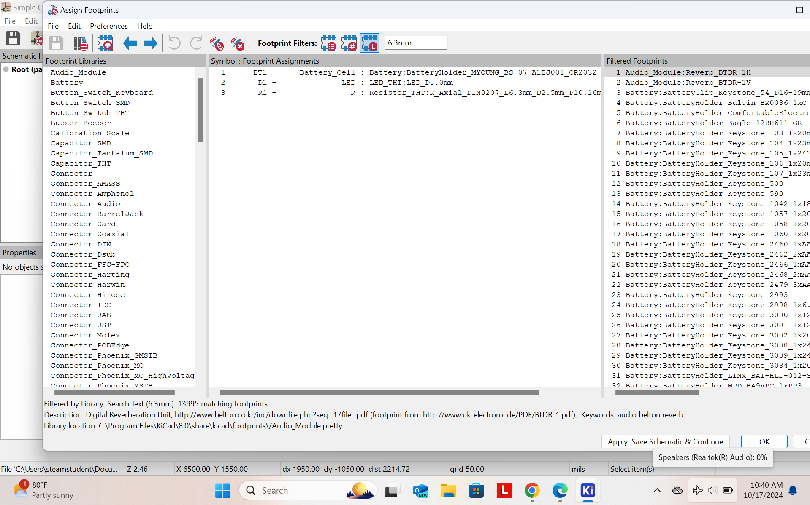
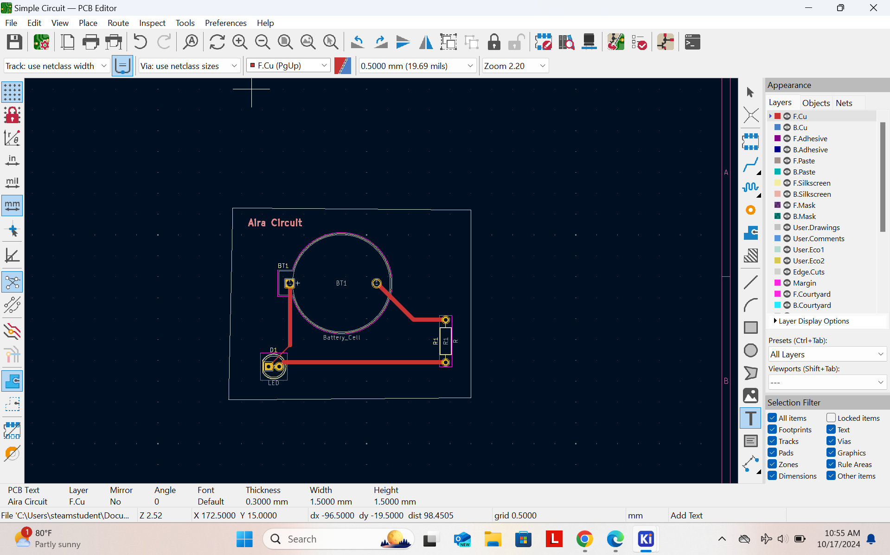
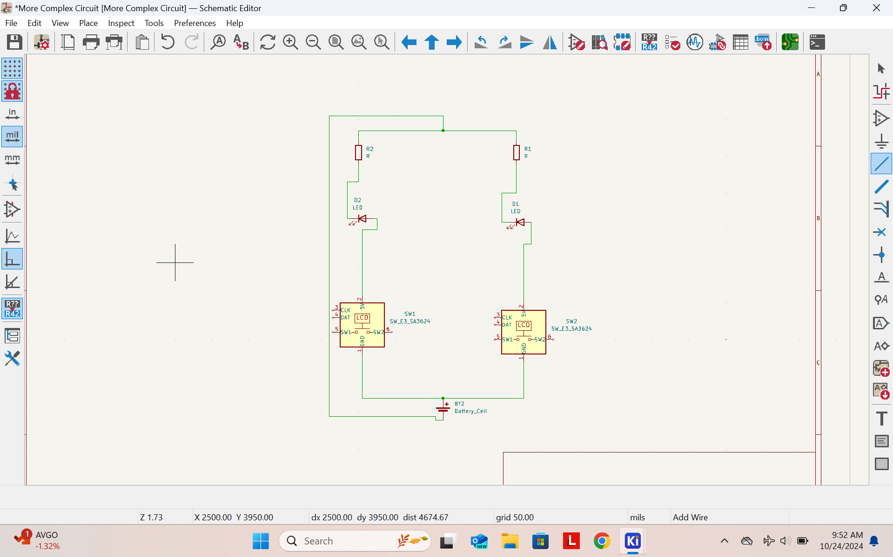
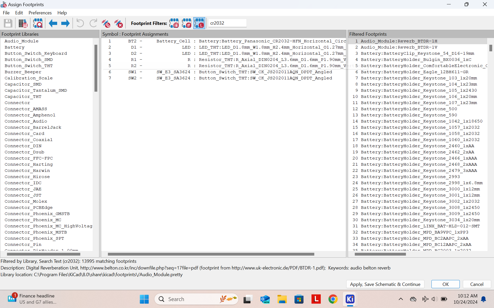
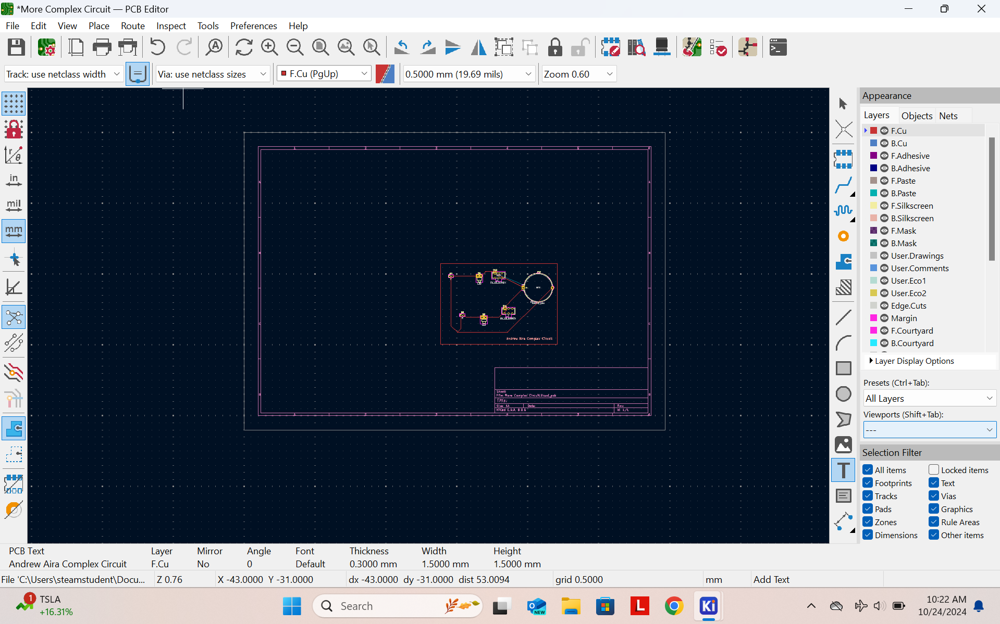

On the application Kicad, we created mutltiple circuits. The first circuit on the left shows a battery, connected to a resistor, connceted to a led. One part is the intial sketch of the circuit, the second part is finding the official parts for each device, and fianlly the actual parts put together. The right side has the same type of picture, but for a more complex circuit. The design has one battery, two swicthes, two resistors, and two leds all connected together.
     